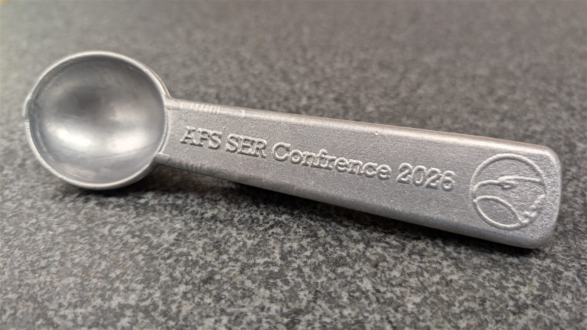
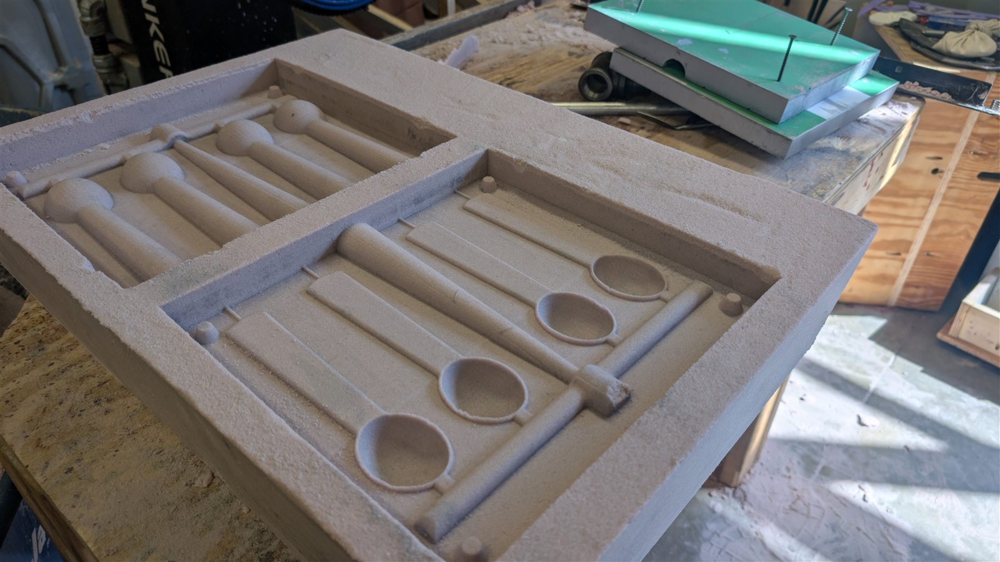
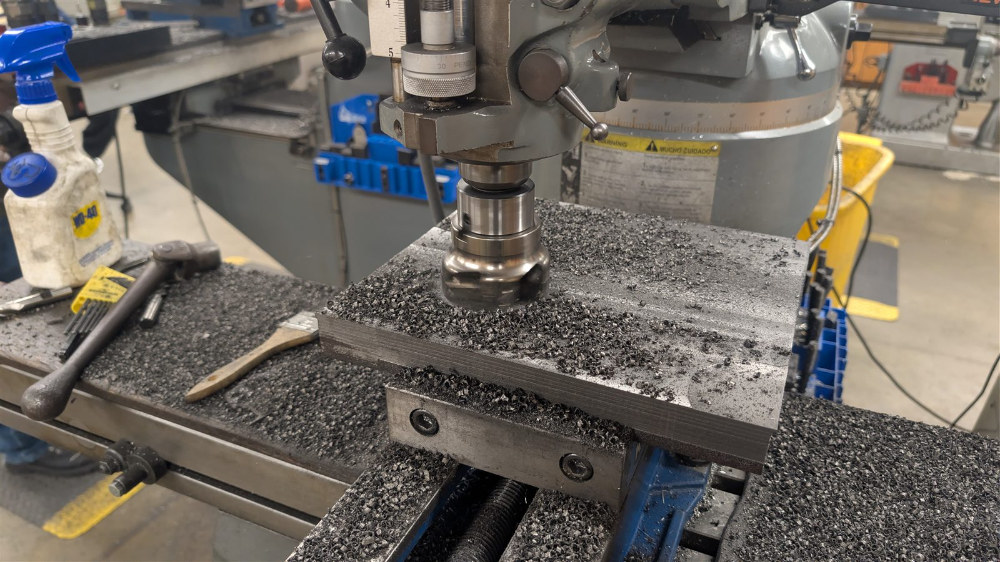
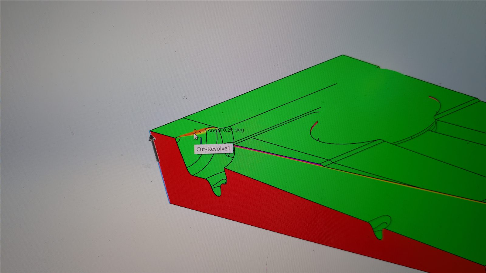
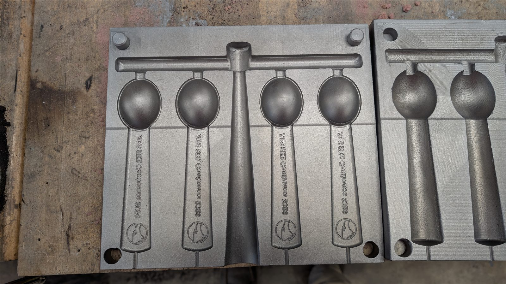
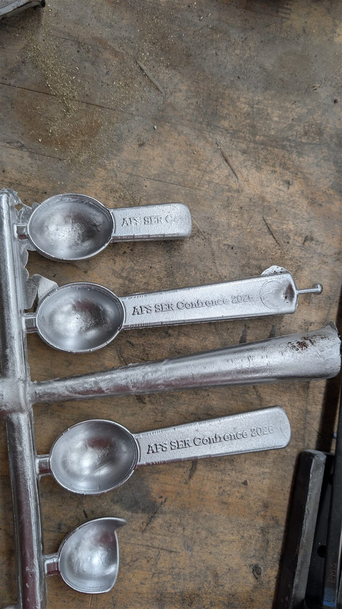

Project 05 — Casting competition — 2026
Permanent Mold Ice Cream Scoop
We won the American Foundry Society’s Southeast Regional Conference casting competition with it. The part was cast in aluminum — into a mold that was itself a casting before we machined it.
- Result
- Winner — AFS Southeast Regional Conference 2026
- Process
- Permanent mold
- Mold
- Gray iron · cast, then machined
- Part
- Aluminum
- Team
- Student team

Two castings, one part
A permanent mold is a reusable metal mold rather than a sand mold that is broken away after every casting. That meant the job had two stages: make the tool, then make the part with it.
- The tool — the mold was cast in gray iron, then machined.
- The part — the ice cream scoop was cast in aluminum into that mold.





The mold was a casting before it was a tool.